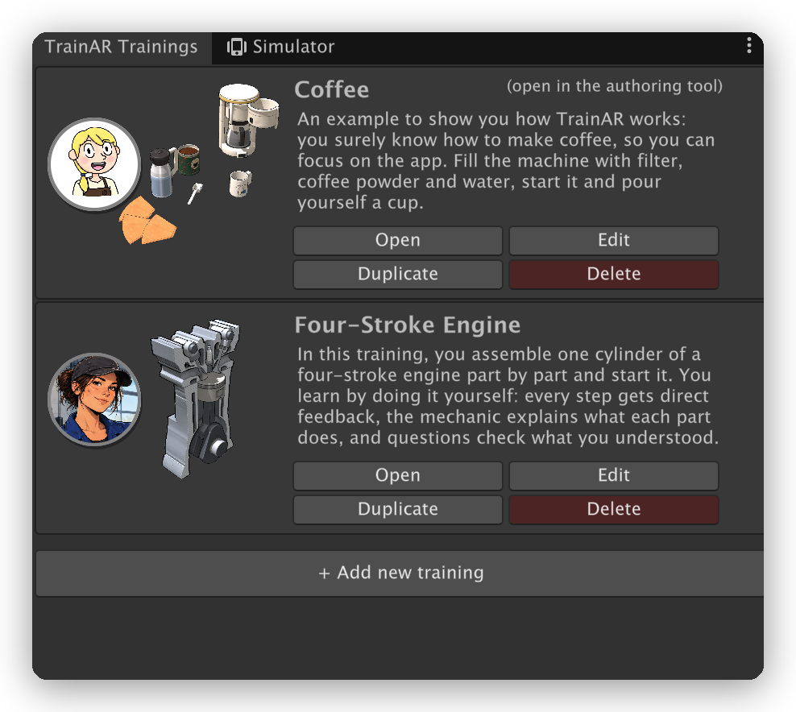
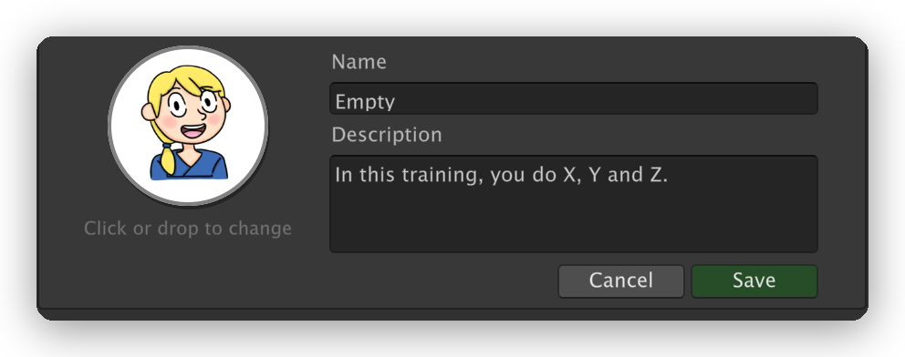

Managing Trainings
One TrainAR project can hold any number of trainings. All of them are part of the app: the trainees choose one on the home screen. TrainAR ships with two example trainings, Coffee and Four-Stroke Engine.
The TrainAR Trainings tab
The TrainAR Trainings tab sits next to the Simulator in the authoring tool. If it is not visible, choose TrainAR → Options → Show Trainings List (and Show Simulator to switch back).

Every training is shown as a box with its preview, its expert, its name and its description. The buttons in each box:
- Open opens the training in the authoring tool: its scene, its stateflow and the default view. The training that is currently open is marked with (open in the authoring tool).
- Edit lets you change the name, the description and the expert picture. Click the round expert (or drop a picture on it) to change it. Save applies your changes, Cancel discards them.
- Duplicate creates a copy of the training under a new name, for example to start a variation of an existing training. The copy uses the same 3D models as the original.
- Delete removes the training with everything in its folder. This cannot be undone. The last training of a project cannot be deleted.

+ Add new training at the bottom creates a new, empty training: the TrainAR scene without TrainAR Objects and a stateflow with only the TrainAR: Onboarding completed and training assembly placed node and the TrainAR: Training Conclusion node.
Note
TrainAR → Open TrainAR Authoring Tool always opens the training you opened last on this computer. On the first launch (or if that training was deleted), it opens the Coffee example.
What belongs to a training
Every training lives in its own folder, Assets/Trainings/<Name>/:
<Name>.unity: the scene with the TrainAR Objects of the training.<Name>_Statemachine.asset: the TrainAR stateflow of the training.<Name>_Info.asset: the name, the description and the expert picture that are shown in the app.<Name>_Preview.png: the preview of the training's setup (created automatically, see below).
Put the 3D models, sounds and pictures of a training into its folder as well, so that everything that belongs to it stays together. When you open or create a training, the Project window jumps to its folder: drag your files in there. 3D models can be FBX, OBJ, glTF or GLB files.
Name, description and expert
The name and the description are shown on the home screen and on the first page of the onboarding. Describe what trainees do and learn in the training, for example "In this training, you assemble …". The expert is a picture of the person who guides the trainees: it is shown as a round picture next to the expert insights, on the home screen and in the final assessment. Pictures with a transparent background get a white circle behind them; other pictures are cut round.
Previews
The preview shows the training's setup as the trainee sees it after placing it, without the table and with a transparent background. You do not have to create it: TrainAR renders the previews of all trainings before every build. Until the first build, a new training shows Preview after the next build.
The home screen
After starting the app, trainees see the home screen with all trainings: first the two examples, then all other trainings in the order they were created. Tapping a training starts its onboarding, which first presents the training's name, description, expert and preview. At the end of a training, and with the back button in the onboarding, trainees get back to the home screen.
Below the trainings, the home screen shows a footer with links to GitHub, Mixality and the documentation, information on funding, credits and how to cite TrainAR, and a contact link. If you do not want it in your app, uncheck Show the TrainAR footer on the home screen at the bottom of the TrainAR Trainings tab.